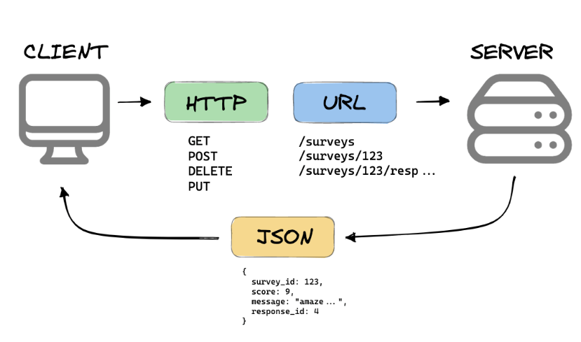

Apa itu REST API?
REST
REST memiliki kepanjangan Representional State Transfer yaitu suatu arsitektur yang mengatur aturan atau pedoman, atau singkatnya suatu standar yang diterapkan antar sistem komputer dan web yang digunakan untuk mempermudah pertukaran data. yang dimana dalam konsep REST lebih merujuk kepada sistem komunikasi menggunakan representasi status/state dari sumber daya
API
API memiliki kepanjangan dari Application Programming Interface atau antarmuka pemrograman aplikasi, nah maksud dari antarmuka mungkin biasanya membahas UI atau mungkin membicarakan visualisasi dalam pemrograman atau singkatnya penghubung/sistem komunikasi antar manusia dengan programnya alias GUI, namun bedanya antarmuka pada API itu lebih fokus pada sistem komunikasi yang bekerja antara klien dan server, hingga bisa dibilang API itu merupakan suatu sistem yang dirancang sedemikian rupa hingga dapat menghubungkan klien dan server.
Contohnya mungkin seperti saat kita login atau memasukkan data pada suatu aplikasi, tidak mungkin kita membuat seluruh database pada aplikasinya sedangkan data yang diperlukan hanya sebatas data yang kita miliki, oleh karena itu hal tersebut pasti merupakan suatu hal yang berbahaya dan tidak efisien oleh karena itu para developer pun mau tak mau harus membuat server yang terpisah dari aplikasinya dan dihubungkan melalui internet, namun masalahnya bagaimana suatu klien atau user yang login bisa mengakses datanya pada database dengan tepat dan aman?, nah solusinya adalah penggunaan API, yang dimana API ini dapat melakukan komunikasi data antar klien dan server, umpamanya seperti waitress dalam restoran (Prasmanan gak termasuk).
REST API
Dari definisi REST dan API tadi REST API merupakan suatu API yang
memiliki arsitektur REST, hingga pada segmen ini mungkin bakal lebih
dijelaskan di bagian cara kerja dan kegunaan
REST API merupakan implementasi REST dalam bentuk API yang dalam
penerapannya REST API lebih fokus ke sumber daya yang dikelola
hingga membuat komunikasi antar klien dan server lebih sederhana dan
objektif.
Apa kegunaan Rest API? dan Bagaimana cara kerja REST API?
Kegunaan REST API sebenarnya cenderung merujuk ke kegunaan API sendiri, yaitu sebagai sistem komunikasi antar klien dan server, namun perumpamaan dari perbedaannya adalah REST API itu ibaratnya seorang waitress pendiam yang hanya fokus untuk mendengarkan pilihan menu pelanggan dan menyampaikannya langsung ke koki, agar pelayanannya lebih cepat dan tepat.
Pertama klien mengakses resource atau data ke server dimana tiap
data tersebut akan dibedakan oleh URI (perhatikan perubahan link web
setiap kali melakukan submit suatu hal). Data dari REST server
seperti yang disebut di atas, bisa berupa XML, atau JSON.
Lalu klien membuat permintaan/request HTTP/transfer data ke server
menggunakan URL, (perlu diperhatikan kalau URL dan URI itu berbeda
fungsinya, URI untuk identifikasi sumber daya dan URL untuk
menemukan sumber datanya) lalu server mengirim balik respon
HTTP/transfer data yang diminta klien
Method request HTTP/transfer data yang digunakan itu tidak jauh dari konsep CRUD (Create,Read,Update,Delete) yang kalau di dalam REST API itu menggunakan Method GET, POST,DELETE, PUT yang dapat digunakan untuk melakukan CRUD pada data dengan GET yang merujuk permintaan menampilkan suatu data, PUT untuk melakukan edit suatu data, POST untuk membuat entry dari suatu data dan DELETE untuk menghapus data. yang semuanya digunakan klien untuk memanipulasi data melalui request/permintaan HTTP/transfer data.
Berikut merupakan visualisasi cara kerjanya :
